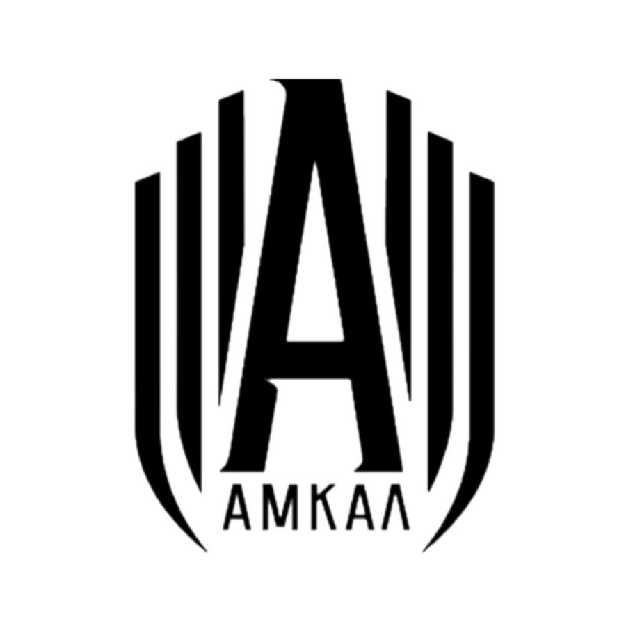

О команде
«Амка́л» — российский любительский футбольный клуб из Москвы. Одна из самых популярных медиафутбольных команд России (по состоянию на июнь 2024 — 2,8 млн подписчиков на YouTube)
«Амка́л» — российский любительский футбольный клуб из Москвы. Одна из самых популярных медиафутбольных команд России (по состоянию на июнь 2024 — 2,8 млн подписчиков на YouTube)
Для связи с нами, пожалуйста, отправьте email на ......